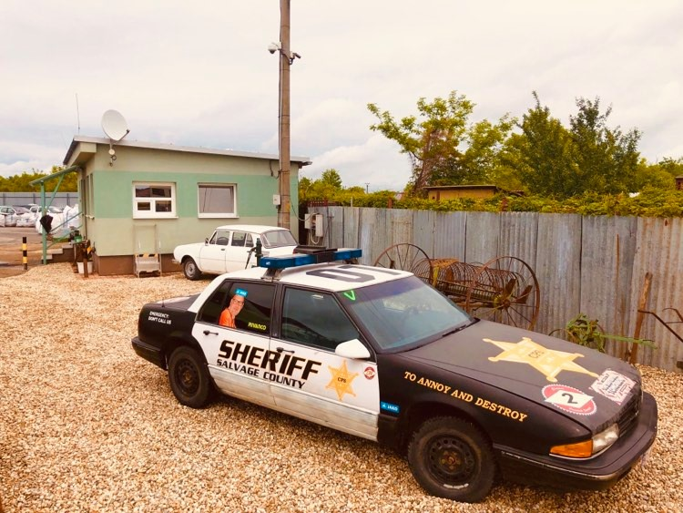
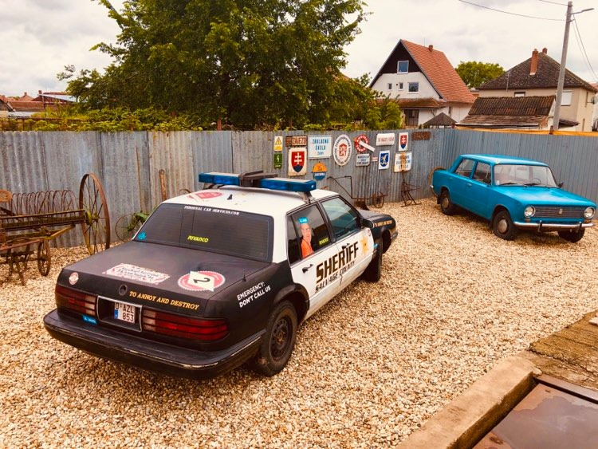

Likvidácia autovrakov
Preberáme vozidlá všetkých značiek – poškodené, havarované aj nepojazdné. Vystavíme potvrdenie a zabezpečíme vyradenie z evidencie.
Ako to prebiehaVykupujeme železný šrot, farebné kovy, papier a autobatérie. Staré vozidlo odvezieme bezplatne, vystavíme potvrdenie o prevzatí a zabezpečíme vyradenie z evidencie.
Praktické riešenia pre fyzické osoby aj firmy v oblasti Západného Slovenska.
Preberáme vozidlá všetkých značiek – poškodené, havarované aj nepojazdné. Vystavíme potvrdenie a zabezpečíme vyradenie z evidencie.
Ako to prebiehaVykupujeme železný šrot, meď, mosadz, hliník, nerez, papier a batérie (akumulátory).
Zoznam materiálovPonúkame likvidáciu technologických zariadení a ich odvoz aj rozpaľovanie kovového odpadu autogénom.
Dohodnúť konzultáciu
Dohodnite si termín bezplatného odvozu na čísle 0903 373 854.
Technický preukaz, osvedčenie o evidencii, evidenčné čísla a občiansky preukaz. Iná osoba potrebuje úradne overené splnomocnenie.
Vydáme potvrdenie o prevzatí na spracovanie a zabezpečíme vyradenie vozidla z národnej evidencie.
Aktuálne výkupné ceny si overte telefonicky.
Opýtať sa na výkup
Firma začínala výkupom druhotných surovín. V roku 2017 získala autorizáciu na zber a spracovanie starých vozidiel a svoje služby rozšírila aj o komplexnú likvidáciu technologických zariadení.
Najdôležitejšie informácie z pôvodného webu na jednom mieste.
Áno. Firma na pôvodnom webe uvádza bezplatný odvoz starých vozidiel vlastnou odťahovou službou. Termín si dohodnite na čísle 0903 373 854.
Technický preukaz, osvedčenie o evidencii časť I (a časť II, ak ju vozidlo má), evidenčné čísla a občiansky preukaz. Ak vozidlo odovzdáva iná osoba než vlastník, potrebuje úradne overené splnomocnenie.
Pôvodný web uvádza možnosť ponechať si evidenčné čísla a preniesť ich na iné vozidlo.
Áno, náhradné diely zo starých vozidiel sú dostupné. Volajte 0908 143 888.
Najrýchlejšie vám poradíme telefonicky.